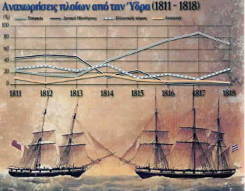

| Ναυτιλία - εμπόριο  Η ανάπτυξη της ελληνικής οικονομίας αυτής της περιόδου ταυτίζεται κυρίως με το εμπόριο, το οποίο είναι άρρηκτα συνδεδεμένο με την ανάπτυξη της ναυτιλίας. Η συνθήκη του Κιουτσούκ Καϊναρτζή (1774), με την οποία τα ελληνικά πλοία με ρωσική σημαία έπλεαν ελεύθερα αλλά και το κενό που άφησαν στη λεκάνη της ανατολικής Μεσογείου οι δύο μεγάλες εμπορικές δυνάμεις, Αγγλία και Γαλλία, εξαιτίας της εμπλοκής τους σε πόλεμο (Ναπολεόντειοι πόλεμοι) οδήγησε σε ραγδαία ανάπτυξη την ελληνική ναυτιλία και το εμπόριο. Τα νησιά Ύδρα και Σπέτσες στον Αργοσαρωνικό, τα Χανιά στην Κρήτη, η Μεθώνη, η Κορώνη, το Ναύπλιο και η Πάτρα στην Πελοπόννησο, η Σαλαώρα (της ¶ρτας) στην Ήπειρο, η Θεσσαλονίκη και η Καβάλα στη Μακεδονία, η Ζάκυνθος και η Κέρκυρα στο Ιόνιο και βέβαια τα νησιά του Αιγαίου, κυρίως η Χίος, τα Ψαρά, η Μύκονος μετατρέπονται σε σημαντικά λιμάνια – εμπορικά κέντρα του ελλαδικού χώρου κατά τα τελευταία πενήντα χρόνια πριν την Επανάσταση. Ωστόσο με τη λήξη των Ναπολεόντειων πολέμων (1815) Αγγλία και Γαλλία επανακτούν τον έλεγχο του εμπορίου στην ανατολική Μεσόγειο και οδηγούν την ελληνική εμπορική ναυτιλία σε κρίση. |
||